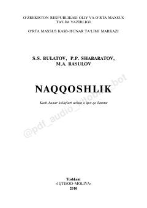

NNaqqoshlik san'ati tarixi, nazariyasi va amaliyotiga bag'ishlangan o'quv qo'llanma.
Ushbu o'quv qo'llanma kasb-hunar kollejlari o'quvchilari uchun mo'ljallangan bo'lib, unda naqqoshlik san'atining tarixi, nazariy asoslari va amaliy xususiyatlari yoritilgan. Kitobda naqsh turlari, ustoz-shogird an'analari, O'zbekiston naqqoshlik maktablari hamda naqshlarning ramziy ma'nolari batafsil bayon etilgan.